本期内容
- 多重共线性
- 异方差
- 内生性
- 模型设定偏误
多重共线性
多重共线性的概念
完全多重共线性
- 定义：模型中的解释变量之间存在严格的线性关系。
- 数学表述：存在一组不全为零的常数 c₁, c₂, …, ck，使得等式 $$c_1X_{i1} + c_2X_{i2} + ... + c_kX_{ik} = 0$$ 对所有样本点 i 都成立。
- 后果：此时，OLS估计量中的 $(X^T X)^{-1}$ 矩阵不存在，无法求得唯一的参数估计量。
近似多重共线性
- 定义：模型中的解释变量之间存在高度相关但非完全精确的线性关系。
- 数学表述：存在一组不全为零的常数 c₁, c₂, …, ck，使得等式 $$c_1X_{i1} + c_2X_{i2} + ... + c_kX_{ik} + v_i \approx 0$$ 近似成立，其中 $v_i$ 为随机误差项。
- 核心后果：此时 $(X^T X)$ 矩阵接近奇异（其行列式 $|X^T X| \approx 0$），导致参数估计量的方差 $Cov(\hat{\beta})=\sigma^2(X^T X)^{-1}$ 变得非常大，估计量不再“有效”，统计推断（如t检验）可能失效。
多重共线性的后果
-
完全多重共线性：参数估计量不存在
- 原因：当解释变量间存在严格的线性关系（完全共线性）时，矩阵 $(X^T X)$ 是奇异矩阵，其逆矩阵 $(X^T X)^{-1}$ 不存在。
- 后果：由于OLS估计量 $\hat{\beta} = (X^T X)^{-1}X^T Y$ 的计算依赖于 $(X^T X)^{-1}$，因此在该情况下无法得到任何参数的估计值。
-
近似多重共线性：参数估计量方差增大，失去有效性（非有效）
- 原因：当解释变量间高度相关但非完全相关（近似共线性）时，矩阵 $(X^T X)$ 的行列式 $|X^T X| \approx 0$，其逆矩阵 $(X^T X)^{-1}$ 的主对角线元素变得非常大。
- 后果：根据参数估计量的方差-协方差矩阵公式 $Cov(\hat{\beta}) = \sigma^2 (X^T X)^{-1}$，参数估计量的方差会急剧增大。虽然估计量仍具有无偏性，但其方差不再是最小的，因此在“线性无偏估计量”中不再具有“有效性”，即OLS估计量非有效。
-
参数估计量的经济意义不合理
- 原因：当两个变量高度共线时，它们对被解释变量的影响是“共同”施加的，难以剥离。
- 后果：单个参数估计值（如 $\hat{\beta}_1$）不再能准确反映对应变量（$X_1$）与被解释变量之间的独立结构关系。该系数可能失去应有的经济含义，甚至出现符号与理论预期相反的“反常”现象。
-
变量的显著性检验和模型的预测功能失效
- 对显著性检验的影响：由于参数估计量的方差 $s_{\hat{\beta}_i}$ 变得很大，用于检验变量显著性的 t 统计量 $t = \hat{\beta}i / s{\hat{\beta}_i}$ 的值会变小。这可能导致本应显著的变量被误判为不显著，使得t检验失去意义。
- 对预测功能的影响：参数方差增大会导致预测值的置信区间过宽，使得预测的精度大大降低，模型的预测功能失效。
注意：多重共线性并不违背OLS的基本假设，因此OLS估计量仍保持无偏性和线性性。其所有问题都出在“统计推断”环节——即基于估计量方差进行的假设检验、置信区间构建和预测。
多重共线性解决方案
多重共线性的检测
是否存在多重共线性？
- 对于两个解释变量：计算二者的简单相关系数 \(r\)。若 \(|r|\) 接近1，则可能存在较强的多重共线性。
- 对于多个解释变量：采用综合统计检验法。如果在OLS回归结果中，模型的整体 \(R^2\) 与 \(F\) 值都很大，但多数解释变量的 \(t\) 检验值不显著（\(p\) 值大），则说明各变量对 \(Y\) 的联合作用显著，但单个变量的独立作用因共线性而难以分辨，提示存在多重共线性。
哪些变量之间存在共线性？
-
方差膨胀因子法：
- 为每个解释变量 \(X_j\) 做辅助回归，即以 \(X_j\) 为被解释变量，对其他所有解释变量进行回归，得到拟合优度 \(R_j^2\)。
- 计算该变量的方差膨胀因子：\(VIF_j = \frac{1}{1 - R_j^2}\)。
- 判断准则：如果所有 \(VIF\) 的平均值大于2，且最大值大于10，则认为存在严重的多重共线性。
-
逐步回归法：
- 向后逐步回归：从包含所有变量的模型开始，逐个剔除 \(t\) 值不显著的变量。如果剔除某个变量后，模型的拟合优度 \(R^2\) 变化很小，则说明该变量可能与其它变量存在共线性，而非独立的解释变量。
- 向前逐步回归：从空模型开始，逐个引入变量。如果引入新变量后，模型的拟合优度 \(R^2\) 变化很不显著，则说明新引入的变量与模型中已有变量存在共线性。
多重共线性的解决
第一类方法：排除引起共线性的变量
- 操作：通过上述检验（特别是逐步回归法）找出并剔除与其他变量高度相关、且经济意义相对次要的解释变量。
- 注意：剔除变量后，剩余解释变量参数的经济含义和数值都可能发生变化，因为被剔除变量的影响会部分地由剩余变量承担。
第二类方法：减小参数估计量的方差
多重共线性的主要后果是参数估计量的方差非常大。此类方法旨在直接改善估计的稳定性。
- 增加样本容量：理论上可以减小参数估计量的方差，但实践中往往难以获得更多数据。
- 采用有偏估计方法：例如岭回归、主成分回归等。这些方法通过主动引入一个小的偏差，来换取方差的大幅降低，从而在综合指标（如均方误差MSE）上可能优于OLS估计。这类方法不直接解决变量间的相关性，而是致力于改善“估计量方差过大”这一后果。
代码演示
这里以李子奈《计量经济学：第五版》第111页的案例进行演示。
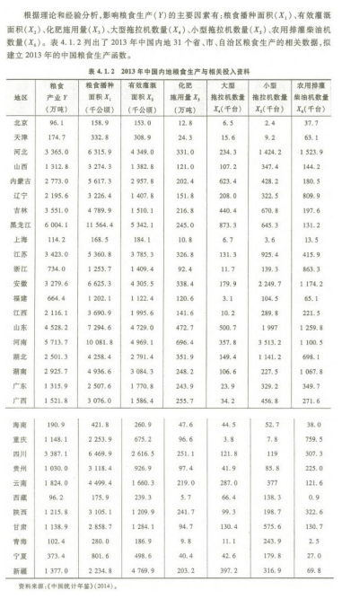
下面给出第一步回归的代码：
|
|
得到如下结果：
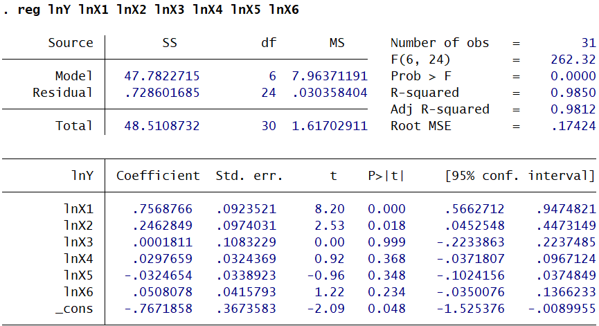
同时给出方差膨胀因子VIF的结果:
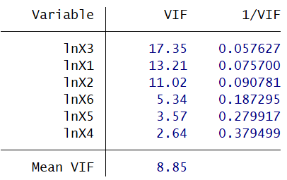
结果表明模型存在多重共线性。 进一步查看各变量间的相关系数。
|
|
相关系数表如下：
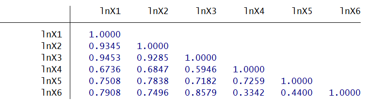
发现lnX1,lnX2,lnX3之间存在显著相关关系，lnX3和lnX6之间也存在明显相关关系，下面使用向前逐步回归来解决模型多重共线性问题。
|
|
最终得到如下结果：
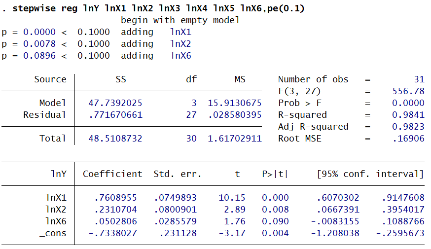
异方差
异方差的概念
-
经典假设：在经典线性回归模型（CLRM）的高斯-马尔可夫假设中，要求随机误差项 $\mu_i$ 满足“同方差性”，即其方差对所有观测点 $i$ 均为相同的常数 $\sigma^2$：
$$\text{Var}(\mu_i) = E(\mu_i^2) = \sigma^2$$此时，随机误差项的方差-协方差矩阵为：
$$\text{Cov}(\mathbf{\mu}) = E(\mathbf{\mu}\mathbf{\mu}^T) = \sigma^2 \mathbf{I}$$其中 $\mathbf{I}$ 是单位矩阵。
-
异方差的定义：当“同方差性”假设被违背时，即随机误差项的方差不再是一个常数，而是随观测点的不同而变化，就认为出现了异方差性。
$$\text{Var}(\mu_i) = E(\mu_i^2) = \sigma_i^2$$此时，方差-协方差矩阵是一个对角线元素各不相同的对角矩阵，不再是 $\sigma^2 \mathbf{I}$。
异方差的后果
异方差不违背“零均值”和“无自相关”的假设，但破坏了“同方差”假设。这会引发一系列严重后果：
-
参数估计量“非有效”
- OLS估计量仍然是无偏的、一致的，因为无偏性的证明不依赖于同方差假设。
- 然而，高斯-马尔可夫定理证明OLS估计量是“最佳线性无偏估计量”（BLUE）的前提是所有经典假设（包括同方差）都成立。一旦存在异方差，OLS估计量在所有线性无偏估计量中不再具有最小的方差，即不再“有效”。
- 在大样本下，OLS估计量虽具有一致性，但仍不具有渐近有效性。
-
标准误差的估计失效，导致统计推断全部失效
- 参数估计量方差的公式 $Cov(\hat{\beta}) = \sigma^2 (X^T X)^{-1}$ 在同方差下成立。在异方差下，这个公式是错误的。
- 基于此错误公式计算的参数标准误 $s_{\hat{\beta}_i}$ 也是错误的。
- 由于后续所有的统计推断都依赖于 $s_{\hat{\beta}_i}$，导致以下全部失效：
- t检验和F检验失去意义：用于判断变量显著性的t统计量 $t = \hat{\beta}i / s{\hat{\beta}_i}$ 不再服从t分布，其结论不可信。
- 置信区间构建不准确：基于错误标准误构造的置信区间宽度和覆盖率均不准确。
- 模型的预测功能失效：预测值的置信区间同样依赖于参数方差，错误的方差估计会使预测区间精度严重下降，失去预测价值。
异方差的检验
核心思路：由于我们无法观测到随机扰动项的真实方差 $\sigma_i^2$，我们通过OLS估计得到的残差平方 $\tilde{e}_i^2$ 来近似它。然后检验 $\tilde{e}_i^2$ 是否与模型中的解释变量存在系统性关系。如果存在，则表明存在异方差。
图示法
- 操作：用OLS法估计原模型，得到残差 $\tilde{e}_i$ 或残差平方 $\tilde{e}_i^2$。然后绘制 $\tilde{e}_i^2$ 与某个解释变量 $X_j$ 或拟合值 $\hat{Y}$ 的散点图。
- 判断：如果散点图呈现出明显的、有规律的变化趋势（如单调递增/递减的喇叭形、U形、倒U形等），而非围绕一条斜率为零的直线随机分布，则提示可能存在异方差。这是一种直观但不够精确的判断方法。
BP检验
- 操作：
- 用OLS法估计原模型 $Y_i=\beta_0+\beta_1X_{i1}+…+\beta_kX_{ik}+\mu_i$，得到残差平方 $\tilde{e}_i^2$。
- 构造并估计辅助回归模型： $$\tilde{e}_i^2=\delta_0+\delta_1X_{i1}+...+\delta_kX_{ik}+\epsilon_i$$
- 检验辅助回归方程中所有解释变量系数的联合显著性。
- 检验统计量：
- F检验：$F=\frac{R_{\tilde{e}^2}^2/k}{(1-R_{\tilde{e}^2}^2)/(n-k-1)} \sim F(k, n-k-1)$
- LM检验（拉格朗日乘子检验）：$LM = nR_{\tilde{e}^2}^2 \sim \chi^2(k)$
- 原假设 $H_0$：$\delta_1=\delta_2=…=\delta_k=0$（即同方差）。
- 判断：如果F统计量或LM统计量在给定显著性水平下是显著的，则拒绝同方差的原假设，认为存在异方差。
怀特检验
- 操作：怀特检验是BP检验的推广，它不仅检验方差与解释变量的线性关系，还检验了与解释变量的平方项、交叉项等非线性关系。
- 用OLS法估计原模型，得到残差平方 $\tilde{e}_i^2$。
- 构造并估计辅助回归模型。以二元模型为例，辅助回归包含所有解释变量、它们的平方项以及交叉项： $$\tilde{e}_i^2=\alpha_0+\alpha_1X_{i1}+\alpha_2X_{i2}+\alpha_3X_{i1}^2+\alpha_4X_{i2}^2+\alpha_5X_{i1}X_{i2}+\epsilon_i$$
- 检验该辅助回归方程中所有解释变量（原变量、平方项、交叉项）系数的联合显著性。
- 检验统计量：
- F检验：形式同BP检验，但自由度 $h$ 为辅助回归中解释变量的个数（不包括常数项）。
- LM检验：$LM = nR_{\tilde{e}^2}^2 \sim \chi^2(h)$
- 原假设 $H_0$：所有系数（除常数项）均为0（即同方差）。
- 判断：如果检验统计量显著，则拒绝同方差的原假设，认为存在异方差。优点是能探测更复杂的异方差形式；缺点是当解释变量较多时，辅助回归会引入大量变量，可能损失自由度或引致多重共线性。实践中有时会去掉交叉项以简化。
异方差修正
异方差的根源在于随机扰动项的方差不再为常数，而是与解释变量相关，即 $Var(\mu_i) = \sigma_i^2 = f(X_{ji}) \sigma^2$。其修正的核心目标是重新获得有效的统计推断。
主要方法如下：
加权最小二乘法
这是处理已知（或可合理假设）异方差结构的最直接方法。
- 核心思想：对原模型进行加权变换，赋予方差较小的观测值更大的权重，赋予方差较大的观测值更小的权重，从而将异方差模型转化为同方差模型，然后对变换后的模型应用OLS。
- 操作步骤：
- 假设并估计方差函数：假设 $\sigma_i^2 = f(X_i)$ 具有指数形式，即 $ln(e_i^2) = \alpha_0 + \alpha_1 X_i + …$。用OLS回归估计此方程，得到拟合值 $\widehat{ln(e_i^2)}$。
- 构造权重：计算 $\hat{\sigma_i} = \sqrt{exp(\widehat{ln(e_i^2)})}$，其倒数 $w_i = 1/\hat{\sigma_i}$ 即为标准差权重。由于WLS的权重应为方差的倒数，因此最终权重为 $w2_i = w_i^2 = 1/\hat{\sigma_i}^2$。
- 执行WLS回归：在Stata中，使用命令
reg Y X [aw=w2]进行回归，其中aw=选项代表使用分析权重（Analytic Weight）。
- 结果：WLS估计量 $\hat{\beta}_{WLS}$ 是BLUE估计量，其方差-协方差矩阵的估计是正确的，基于此的统计推断有效。
- 后续检验：可对加权变换后的新模型再次进行异方差检验（如BP检验），以确认异方差问题是否已被消除。
异方差稳健标准误法
当异方差的具体形式未知，或样本容量较大时，这是最常用且最便捷的方法。
- 核心思想：不改变OLS的参数点估计值 $\hat{\beta}_{OLS}$，但修正其方差-协方差矩阵的估计公式，从而计算出“对异方差稳健的”标准误。
- 操作：在Stata中，在常规OLS回归命令后直接添加
, robust选项即可，如reg Y X, robust。 - 优点：
- 操作极其简单，无需预设异方差形式。
- 在大样本下，基于“稳健标准误”进行的t检验、F检验和构建的置信区间是有效的。
- 缺点：得到的估计量方差并非理论上的最小值（即非有效），但具有一致性。其核心价值在于提供了在异方差存在时进行正确统计推断的工具。
代码演示
这里使用李子奈《计量经济学：第五版》第四章课后习题第12题为例：
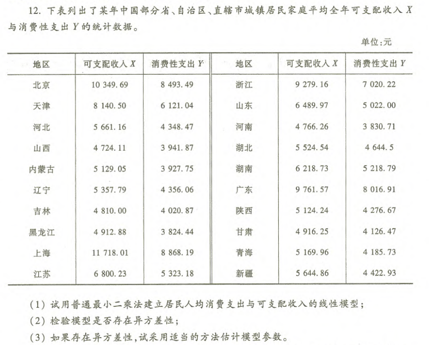
Q1:
|
|
得到如下结果：
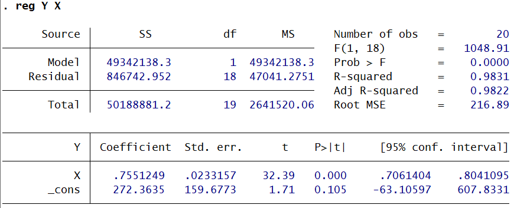
Q2:
|
|
得到如下结果：
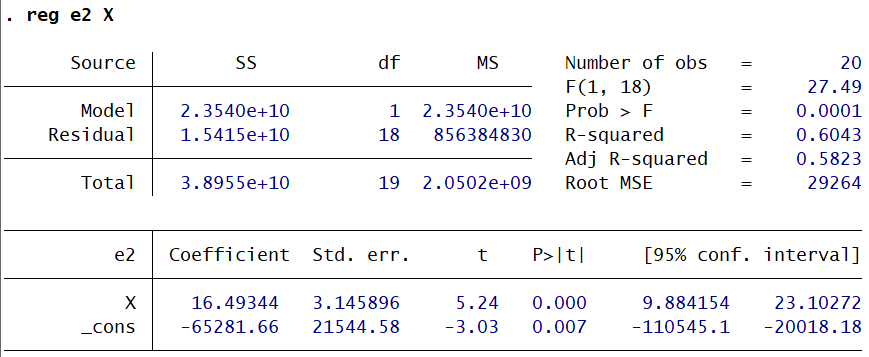
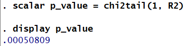
Q3: 因为要估计正确的参数，所以这边使用WLS进行估计。
|
|
WLS估计结果如下：
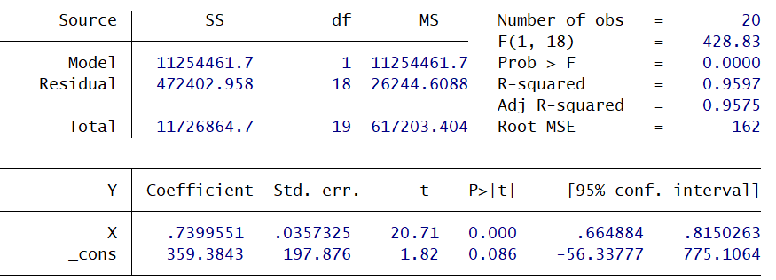
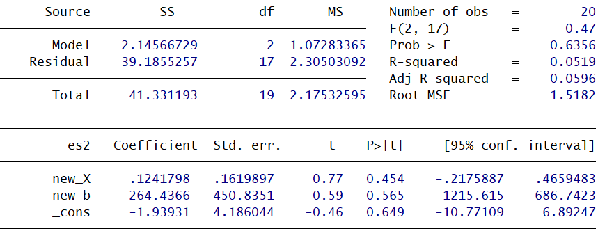
最后，如果不要求估计参数，我们一般也可以直接用稳健标准误来确保统计推断的可靠性。使用稳健标准误结果如下：
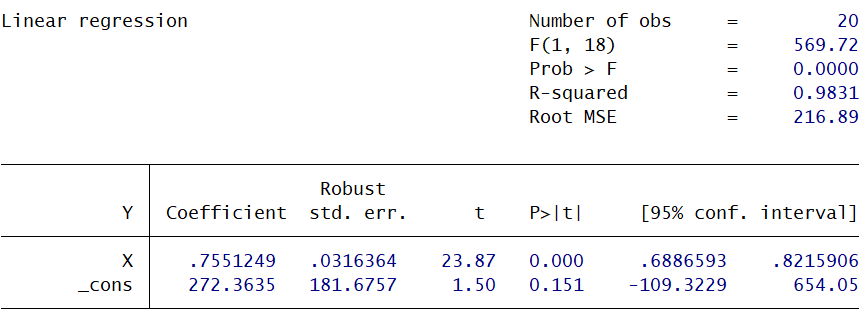
内生性
内生性的概念
内生性是指在计量经济学模型中，一个或多个解释变量与模型的随机扰动项 $\mu$ 存在相关性。
- 截面数据中的核心：在截面数据模型中，内生性问题主要表现为解释变量与随机扰动项的同期相关，即 $Cov(X_i, \mu_i) \ne 0$。此时的解释变量被称为同期内生变量。
内生性来源
-
解释变量与被解释变量存在联立因果关系
- 核心：$X$ 影响 $Y$ 的同时，$Y$ 也反过来影响 $X$。这种双向因果关系，通过 $Y$ 传递，会导致 $X$ 与随机扰动项 $\mu$ 相关。
- 示例：在考察“企业引进外资比例（WR）”对“企业资金利润率（LR）”影响的模型中，WR 影响 LR，但效益好（LR高）的企业也更容易引进外资（WR高），形成双向因果，导致 WR 与 $\mu$ 相关。
-
模型设定中遗漏了重要的解释变量
- 核心：本应纳入模型的某个重要解释变量 $Z$ 被遗漏，而 $Z$ 与模型中的解释变量 $X$ 存在相关性。由于 $Z$ 的影响进入了随机扰动项 $\mu$，导致 $X$ 与 $\mu$ 相关。
- 示例：在工资方程中，个人“能力”难以度量而被遗漏。但“能力”与“受教育年限”相关，因此导致“受教育年限”这个解释变量与包含了“能力”的随机扰动项 $\mu$ 相关。
-
解释变量存在测量误差
- 核心：解释变量的观测值存在误差，这种测量误差会与随机扰动项混合在一起，从而导致观测到的解释变量与其真实值之间存在差异，而这种差异可能与 $\mu$ 相关，引发内生性。
内生性后果
内生性违背了高斯-马尔可夫假设中“解释变量与随机扰动项不相关”的前提，对OLS估计量造成严重后果。
-
参数估计量是有偏的（小样本下）
- OLS估计量 $\hat{\beta}$ 的期望 $E(\hat{\beta}) \ne \beta$。您的理解完全正确：在无偏性证明的关键步骤 $E(X^T\mu) = 0$ 不再成立，因为有 $Cov(X, \mu) \ne 0$。这使得OLS估计量系统地偏离真实参数值。
-
参数估计量是非一致的（大样本下）
- 即使在大样本下，OLS估计量 $\hat{\beta}$ 的概率极限 $plim(\hat{\beta})$ 也不等于真实参数 $\beta$。这意味着无论样本量增加到多大，OLS估计量都无法“收敛”到真实值，偏差不会随着样本增大而消失。这是比“有偏”更严重的问题。
总结：内生性问题的存在，使得基于OLS的估计和统计推断（如假设检验、置信区间）变得完全无效，必须采用新的方法来解决。
如何处理内生性
工具变量法
这是一种用“外生”的工具变量替代“内生”的解释变量进行估计的方法。
-
工具变量（Z）的选择必须满足三个条件：
- 相关性：与所替代的内生解释变量（X）高度相关。这是工具变量有效的前提。
- 外生性（排他性约束）：与随机干扰项（$\mu$）不相关。这是保证估计一致性的关键，意味着Z只能通过X影响Y，不能有直接或间接的其他路径。
- 与模型中外生变量不高度相关：避免在第二阶段引入严重的多重共线性。
-
估计量的性质：
- 大样本下具有一致性：这是工具变量法最重要的优点。其数学证明基于概率极限的性质，即 $\text{plim}(\tilde{\beta}{1}) = \beta{1}$。因为工具变量Z与$\mu$不相关，在取概率极限时，$\sum z_i \mu_i$ 项会收敛于0，从而估计量收敛于真实参数。
- 小样本下是有偏的：由于期望的运算不能像概率极限那样对分子分母进行拆分（即 $E[A/B] \neq E[A]/E[B]$），因此在小样本下，工具变量法估计量通常是有偏的。
-
工具变量法估计过程：
$$\tilde{\beta}_{1} = \frac{\sum z_i y_i}{\sum z_i x_i} = (Z^T X)^{-1} Z^T Y$$这就是工具变量法估计量（IV estimator）。
两阶段最小二乘法（2SLS）
这是工具变量法的一种等价且更易于操作和推广的实现形式。
- 核心思想：将工具变量法的估计过程分解为两个连续的OLS回归阶段。
- 操作步骤（以二元模型 $Y = \beta_0 + \beta_1 X + \beta_2 Z + \mu$ 为例，X为内生变量，$Z_1$ 为X的工具变量）：
- 第一阶段回归：将疑似内生的解释变量X对所有外生变量（包括模型中原有的外生变量Z和选定的工具变量$Z_1$）进行OLS回归。 $$X = \pi_0 + \pi_1 Z_1 + \pi_2 Z + v$$ 得到X的拟合值 $\hat{X}$。$\hat{X}$ 是X中由外生变量（Z和$Z_1$）解释的部分，因此与随机干扰项 $\mu$ 无关。
- 第二阶段回归：用第一阶段得到的拟合值 $\hat{X}$ 替换原模型中的内生变量X，然后对变换后的模型进行OLS回归。 $$Y = \beta_0 + \beta_1 \hat{X} + \beta_2 Z + \epsilon$$ 此阶段回归得到的 $\hat{\beta}_1$ 和 $\hat{\beta}_2$ 即为2SLS估计量。
2SLS与IV的关系
- 估计量等价：2SLS与直接采用IV是等价的。对于恰好识别（工具变量个数等于内生变量个数）的情况，2SLS估计量在数值上等于IV估计量。
- 标准误的差异：虽然点估计值相同，但由软件直接计算出的标准误会有所不同。这是因为在手动执行两阶段回归时，第二阶段回归使用的标准误公式没有考虑到第一阶段是一个估计值（$\hat{X}$）而非真实值（X）的事实，因此是有偏的。规范的2SLS命令（如Stata中的
ivregress 2sls）会使用正确的公式计算标准误，而手动分两步回归或简单的IV公式则可能不会。因此，在实践中应使用专门的2SLS命令，而非手动分步回归。
内生性检验
检验目的
判断可疑内生解释变量（如 \( X \)）是否真的与随机干扰项 \( \mu \) 相关（即是否存在内生性）。
检验思路
假设模型为：\( Y_i = \beta_0 + \beta_1 X_i + \beta_2 Z_{i1} + \mu_i \)，其中 \( X_i \) 是可疑内生变量（可能与 \( \mu_i \) 相关），\( Z_{i1} \) 是外生变量（或工具变量）。
检验的核心是：把 \( X_i \) 分解为“外生部分”和“内生部分”，再观察“内生部分”对因变量 \( Y \) 的影响是否显著。
-
第一步：分离 \( X_i \) 的外生部分
用工具变量（或外生变量）对 \( X_i \) 做回归（即两阶段最小二乘的“第一阶段”），提取 \( X_i \) 中与干扰项无关的外生部分。
回归式：\( X_i = \alpha_0 + \alpha_1 Z_{i1} + \alpha_2 Z_{i2} + v_i \)（若有多个工具变量/外生变量，可加入 \( Z_{i2} \) 等）。
这里的 \( v_i \) 是残差，代表 \( X_i \) 中无法被外生变量解释的部分（即“内生部分”的代理，因为 \( X_i \) 的外生部分已被 \( Z \) 提取）。 -
第二步：将残差 \( v_i \) 加入原模型
把第一阶段得到的残差 \( v_i \)（或 \( \hat{v}_i \)）作为“内生部分”的代理，加入原模型，观察其对 \( Y \) 的影响：
新模型：\( Y_i = \beta_0 + \beta_1 X_i + \beta_2 Z_{i1} + \delta \hat{v}_i + \varepsilon_i \)。 -
第三步：检验残差的系数 \( \delta \)
检验原假设 \( H_0: \delta = 0 \)（即“内生部分”对 \( Y \) 无显著影响，\( X_i \) 无内生性）；
备择假设 \( H_1: \delta \neq 0 \)（即“内生部分”对 \( Y \) 有显著影响，\( X_i \) 存在内生性）。
直观理解
- 工具变量 \( Z \) 的作用是提取 \( X \) 中与干扰项无关的外生部分（即 \( X \) 的“干净”部分）。
- 第一阶段回归的残差 \( v \)，则是 \( X \) 中无法被 \( Z \) 解释的“内生部分”（因为它包含了与 \( \mu \) 相关的成分）。
- 把 \( v \) 加入原模型后：
- 如果 \( \delta \) 不显著：说明“内生部分”对 \( Y \) 无影响，即 \( X \) 的外生部分已足够解释 \( Y \)，\( X \) 无内生性。
- 如果 \( \delta \) 显著：说明“内生部分”对 \( Y \) 有显著影响，即 \( X \) 中存在与 \( \mu \) 相关的成分（内生性）。
检验结论
- 若 \( \delta \) 显著（拒绝 \( H_0 \)）：说明可疑变量 \( X \) 存在内生性，需要用工具变量法（如2SLS）估计。
- 若 \( \delta \) 不显著（接受 \( H_0 \)）：说明 \( X \) 外生，可用普通OLS估计。
Hausman检验的本质
Hausman检验的核心是比较“一致但低效”的IV估计和**“有效但可能不一致”的OLS估计**的差异。若两者差异显著（即 \( \delta \) 显著），说明OLS不一致（因内生性），需用IV；若差异不显著，说明OLS一致，可用OLS。
过度识别检验
检验前提与目标
- 前提条件：该检验仅适用于“过度识别”的情形。即模型中的工具变量个数 $m$ 大于内生解释变量的个数 $k$。例如，有1个内生变量，但为其找到了2个或以上的工具变量。
- 检验目标：判断这组“多出来”的工具变量是否全部是外生的。原假设 $H_0$ 是：所有工具变量均为外生的（即它们与模型的随机干扰项 $\mu$ 不相关）。
检验的核心逻辑
检验的直觉在于：如果所有工具变量都是有效的（外生的），那么它们对因变量 $Y$ 的影响应该且只能通过它们所替代的内生变量 $X$ 来传导。在完成了两阶段最小二乘法（2SLS）估计后，模型的残差中不应该再包含这些工具变量的任何系统性信息。
逆否命题：如果2SLS的残差仍然能被工具变量所解释，那就意味着这些工具变量除了通过内生变量 $X$ 影响 $Y$ 之外，还存在其他直接或间接的路径（即与 $\mu$ 相关），从而违背了工具变量的“外生性”假设。
检验的具体步骤
第一步：执行2SLS估计 用所有工具变量 $Z_1, Z_2, …, Z_m$ 对原模型进行两阶段最小二乘法（2SLS）估计，得到参数估计值。
第二步：计算2SLS残差 利用第一步得到的2SLS估计结果，计算模型的残差 $\tilde{\mu}_i$：
$$\tilde{\mu}_i = Y_i - (\tilde{\beta}_0 + \tilde{\beta}_1 X_{i1} + ... + \tilde{\beta}_k X_{ik})$$（其中，$\tilde{\beta}$ 是2SLS估计量）。
第三步：构造并估计辅助回归 将第二步得到的2SLS残差 $\tilde{\mu}_i$ 作为被解释变量，对所有工具变量（以及模型中原有的外生解释变量）进行OLS回归。
$$\tilde{\mu}_i = \alpha_0 + \alpha_1 Z_{i1} + \alpha_2 Z_{i2} + ... + \alpha_m Z_{im} + \gamma W_i + \epsilon_i$$（其中 $W_i$ 代表模型中原有的外生解释变量）。
第四步：进行假设检验（F检验或其等价形式） * 检验原假设：$H_0: \alpha_1 = \alpha_2 = … = \alpha_m = 0$ * 这个假设意味着所有工具变量在辅助回归中的系数联合不显著，即它们不能系统性地解释2SLS残差。 * 通常构造以下统计量进行检验： * $F$ 统计量：对辅助回归中所有工具变量前的系数进行联合显著性F检验。 * $LM$ 统计量（又称 $J$ 统计量）：计算 $J = n \times R^2$，其中 $n$ 为样本量，$R^2$ 为辅助回归的拟合优度。在大样本下，$J$ 统计量服从自由度为 $(m - k)$ 的卡方分布，即 $J \sim \chi^2(m-k)$。
检验结论的判定
- 如果 $F$ 检验不显著，或 $J$ 统计量对应的 $p$ 值较大（如 $p > 0.05$），则不能拒绝原假设 $H_0$。这为“所有工具变量都是外生的”提供了支持性证据，意味着工具变量的选择可能是合理的。
- 如果 $F$ 检验显著，或 $J$ 统计量对应的 $p$ 值很小（如 $p < 0.05$），则拒绝原假设 $H_0$。这表明至少有一个工具变量不是外生的（与 $\mu$ 相关），工具变量集的有效性受到怀疑，需要重新审视工具变量的选择。
代码实例
这里以李子奈《计量经济学：第五版》第四章课后习题14题为例。
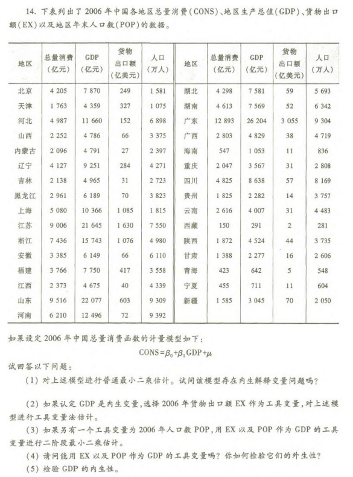
Q1:
|
|
结果如下：
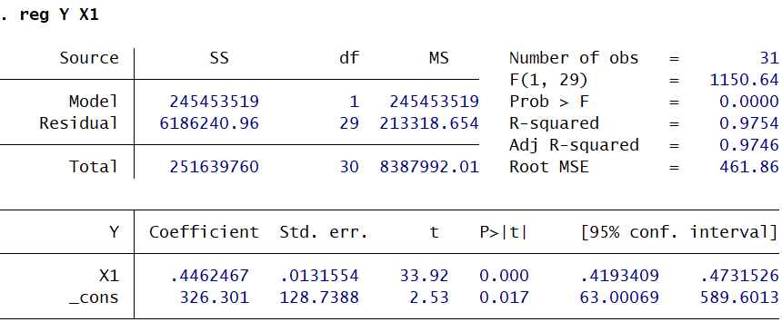
Q2:
|
|
结果如下：
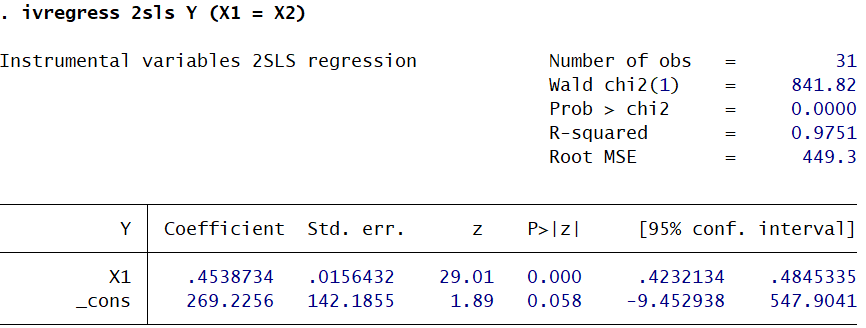
Q3:
|
|
结果如下：
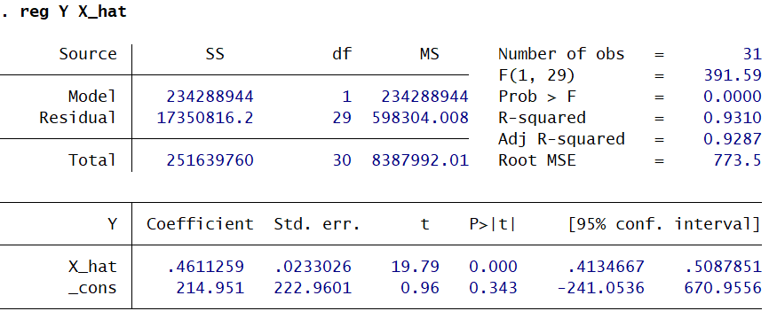
Q4:
|
|
结果如下：
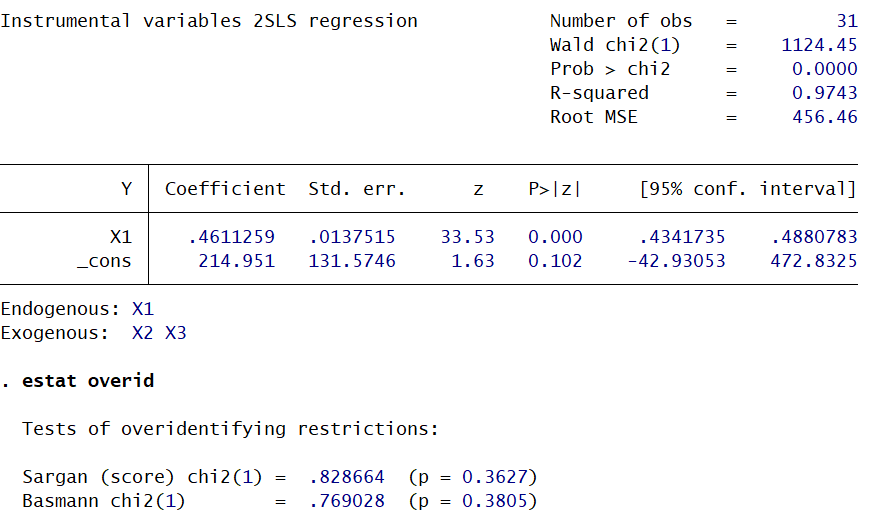
Q5:
|
|
结果如下：
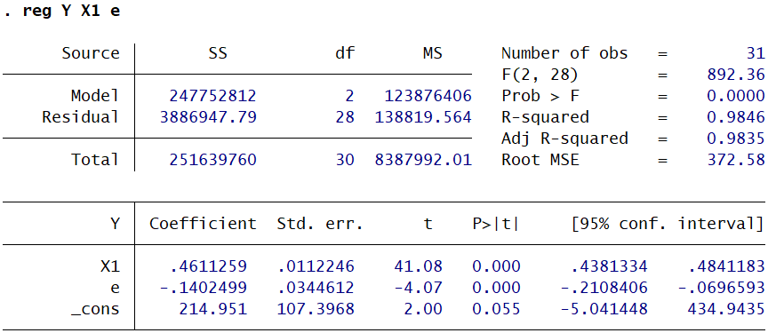
模型设定偏误
三类设定偏误类型
| 类型 | 具体表现 |
|---|---|
| 遗漏相关变量 | 真实模型含$X_1、X_2$，但误设为仅含$X_1$的模型 |
| 纳入无关变量 | 真实模型仅含$X_1、X_2$，但误设为含$X_1、X_2、X_3$（$X_3$无关）的模型 |
| 函数形式错误 | 真实模型为对数形式$\ln Y=\beta_0+\beta_1X_1+\mu$，但误设为线性形式$Y=\beta_0+\beta_1X_1+\mu$ |
对应后果
| 类型 | 后果 |
|---|---|
| 遗漏相关变量 | 1. 若遗漏变量与已纳入变量相关，参数估计有偏且非一致； 2. 随机扰动项方差、参数估计量方差的估计均有偏 |
| 纳入无关变量 | 参数估计无偏，但方差不是最小（丧失有效性） |
| 函数形式错误 | 偏误是全方位的，所有统计推断结论都可能出错 |
常用检验方法
| 偏误类型 | 检验方式 |
|---|---|
| 存在无关变量 | 直接对无关变量的系数做t检验/F检验，若系数不显著则可剔除 |
| 遗漏变量/函数形式错误 | 1. 残差图示法：看残差与解释变量/时间的散点图，若有趋势、循环或正负交替规律，说明设定有误； 2. RESET检验：在原模型中加入被解释变量拟合值的高次幂（$\hat{Y}^2、\hat{Y}^3$），检验新增项是否显著，若不显著则原模型设定合理 |